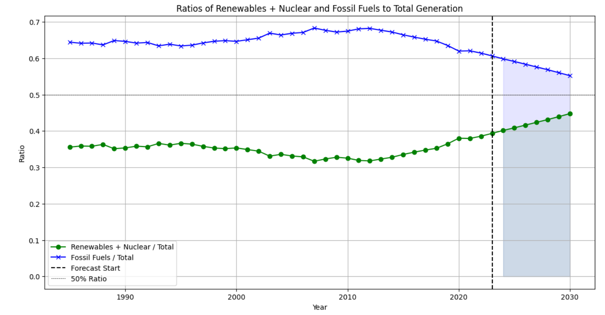

PRÉVISION ET MODÉLISATION ENVIRONNEMENTALE
Le coût environnemental du calcul haute performance.
J’ai dirigé une étude de modélisation à deux sur la manière dont les centres de données relient la demande de calcul à la consommation d’électricité, aux émissions de carbone et à l’eau de refroidissement.

La question
Avec la croissance de la demande de calcul, comment son empreinte environnementale pourrait-elle évoluer ? Nous avons étudié la demande d’électricité, les sources qui l’alimentent et la consommation d’eau pour explorer les possibilités d’amélioration de l’efficacité.

Notre méthode de modélisation
- Comparer les prévisions. Nous avons comparé les modèles AR, MA, ARMA, ARIMA, SARIMA et Holt-Winters pour prévoir la demande d’électricité et les tendances d’efficacité opérationnelle, en rapportant l’erreur quadratique moyenne et l’erreur absolue moyenne.
- Prévoir le mix électrique. À partir des données de production de 1985 à 2023, nous avons sélectionné les ordres ARIMA et les tendances selon le critère d’information d’Akaike (AIC), puis prévu jusqu’en 2030 la production fossile et celle des renouvelables avec le nucléaire.
- Explorer les émissions. Un modèle linéaire généralisé gaussien reliait les émissions de carbone à la consommation d’électricité, à la production par source, à la consommation retardée et à une interaction entre production fossile et renouvelable.
- Étendre l’analyse à l’eau. Nous avons comparé des projections de séries temporelles fondées sur les données de consommation d’eau de 2012 à 2021, en examinant l’influence du choix du modèle sur les perspectives de refroidissement.
Ce que montrent les modèles
Notre prévision du mix électrique estimait à environ 45 % la part des renouvelables et du nucléaire dans la production mondiale en 2030. Cette projection reposait sur les tendances historiques ajustées.
Les prévisions variaient fortement selon le modèle. Pour l’eau, AR prévoyait une croissance rapide, ARIMA et SARIMA des hausses plus modérées, et d’autres modèles des trajectoires stables ou décroissantes. Cet écart soulignait l’importance du choix du modèle dans l’interprétation des résultats.
La régression des émissions présentait aussi des limites : les coefficients autres que l’ordonnée à l’origine n’atteignaient pas le seuil de significativité de 5 %. Nous les avons considérés comme des associations exploratoires, sans en déduire d’effets causaux.
Des modèles aux recommandations
Nous avons proposé d’améliorer le refroidissement et l’utilisation des serveurs, d’adopter du matériel adapté aux charges de travail et de recourir à un ordonnancement tenant compte de l’énergie. Nous avons aussi étudié une électricité plus propre et la récupération de chaleur des serveurs pour les bâtiments voisins ou l’industrie.
Ce projet a renforcé l’intérêt d’étudier ensemble l’électricité, les émissions et l’eau pour évaluer les infrastructures de calcul.
Mon rôle et les résultats
J’ai dirigé cette équipe de deux. Notre rapport de 25 pages réunit comparaisons de modèles, prévisions du mix électrique, analyse des émissions, projections de consommation d’eau et recommandations pratiques.
Méthodes
Prévision de séries temporelles · ARIMA et SARIMA · Holt-Winters · Sélection par AIC · Modèle linéaire généralisé gaussien · Comparaison des erreurs de prévision